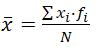

UNIDAD DE ESTADÍSTICA Y PROBABILIDAD
Parámetros de centralización
Los parámetros de centralización, es un valor representativo de los datos de una muestra, y por ende, de la población:
- Media: 
- Mediana (Me): si ordenamos los datos de menor a mayor, la mediana, es el valor central, si N(nº de datos) es impar o la media de los valores centrales si N es par.
- Moda (Mo): es el valor o valores con mayor frecuencia(fi).